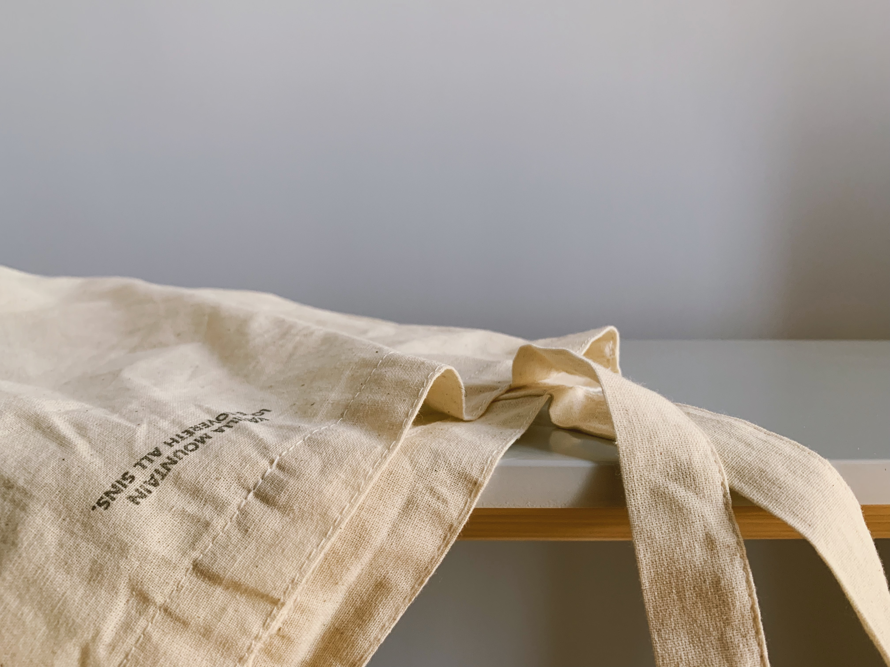

Simple + Sustainable + style
Founded in Brooklyn in 2021, minimalista believes in natural and transparent fashion. With our small staff of seamstresses, we handcraft unadorned, sustainable pieces from our modest loft.
[linen shirts]
our signature. we use recycled coconut buttons for our linen shirts

[patterned fabric]
local artists handpaint all our patterned fabric pieces
[scraps]
we sell or donate all unused scraps of fabric on-site at our loft
[natural]
our fabrics are 100% natural, never synthetic materials

[custom made]
in addition to custom clothing, we custom make canvas bags

[quality]
we love color & we only organic vegetable dye for our vivids